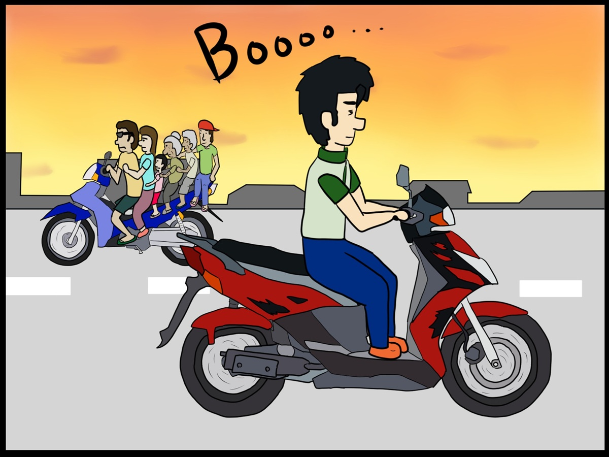

I stopped doing rigid career introductions!
A growth record of an IT novice repeating trial & error to learn IT from AI
Thank you for opening my portfolio. Previously, I wrote this very rigidly, saying "n8n is like this, deterministic design is like that."
👉 [Click here to view my previous rigid portfolio]
However, reading it back, I realized: "If the applicants I always interview submitted such a stiff portfolio, would I want to read it? No, I would definitely just glance at it and stop."
I am not an elite engineer raised in a rigid IT background. However, when it comes to "the practical ability to use AI to its absolute limit to solve real-world problems and bring them to life," I am confident that if I partner with AI, I can stand shoulder-to-shoulder with experienced, elite engineers!
This is a story of determination and system building, where I, as an IT beginner, partnered with AI to create an environment where my English school in the Philippines can run smoothly even without me. Please flip through it like a picture story show!
💡 Behind the Scenes of This Portfolio
I created this portfolio using JavaScript in a pop-up slideshow format so that both IT recruiters and those who don't know about IT can find it "fun to read"!
Slide Table of Contents: Click the area you are interested in!
Not a movie, but reality. Is the "Age of AI" really coming!?
Around the time ChatGPT started spreading across the world, since I was originally a Microsoft + Edge user, I was quick to experience "BingAI." I still remember being incredibly shocked by the amazing answers that came back every time I typed a prompt, and getting excited while exploring the possibilities of "what can be done."
At that moment, I became certain. "If I don't master AI, I will no longer be needed in future business environments." Turning the constraint on its head, I rejoiced, thinking, "Since almost the entire world is at the exact same starting line with AI right now, this is a huge opportunity for me!"
From here, my desire to learn AI exploded. Learning that Python is the main character in AI development, I started daydreaming, thinking, "I want to study Python someday and try even more interesting automations."
Both hardware and software are unknown. Now is the time to test AI's real ability!
The world was making a big fuss saying, "AI-generated images look just like the real thing." To ride this wave, even though I couldn't write a single line of Python, I thought, "Isn't right now the perfect time to operate AI together with AI?" and immediately purchased a cheap, used desktop PC!
From there, it was a three-legged race with BingAI. "How do I change a graphics card?" "Why does the power turn off immediately?" "How do I migrate from an HDD to an SSD?"
Following the AI's instructions, I prepared the environment from zero hardware knowledge, and as told by the AI, made my debut operating Python via PowerShell! After a series of errors and trials, I successfully implemented Stable Diffusion in a local environment! (*Note: Even now, this remains the peak of my hardware skills 😅)
"Please reopen the school!" Throwing away stability to go on-site in the Philippines
After completing my term as a call center SV, I joined an engineering company to learn IT. However, immediately after, earnest voices from supporters and students reached me from the closed English school in the Philippines. Although we reopened on the condition that "remote management is fine," the actual site was in total chaos. Neither automation nor sharing mechanisms were in place.
"An environment that runs without me will never be completed unless I go to the site myself and build the system while getting my hands dirty." With that determination, I resigned in March 2025. The very day after my resignation, I dove straight into the Philippines.
🔥 My Resolve at This Time
"Even if I acquire another main business, I will build a strong organization where operations continue to run automatically." This current job hunt is a "search for my final destination" after witnessing the completion of that organization.
Take a Break: Comic "We Were in the Philippines!!"
This is a comic I drew because I wanted to give shape to my entrepreneurial experiences. Please take a small look at the chaos on-site. It advances every 5 seconds.

Project ①: From an SEO/AEO Beginner to Industry-Leading Multilingual Pages
The first wall I faced after returning to the site was SEO. Due to being left abandoned for 5 years, our company website, which used to be in the top 10 search results, was buried far beyond the rankings.
At the time, I was an SEO beginner, but from there, I started a frantic loop of "Improvement ➡️ Learning ➡️ Improvement." Instead of simply chasing past keywords, I abolished the "cheap price route" to match the school's branding renewal, and aimed directly at AEO (Answer Engine Optimization), which is optimized for the AI era.
Furthermore, to reach potential customers around the world who don't even know that "cost-effective study abroad in the Philippines" exists, I formulated a blue ocean strategy in November 2025 to "make all pages multilingual (14 languages, approx. 400 pages)," which other major competitors haven't touched. Including a design renewal, I built the customer acquisition foundation from zero by March 2026, completing a mechanism that hits strongly even in AI searches.
💡 Thoughts After Completing the Challenge
What greatly pulled up my IT skills was undoubtedly these SEO/AEO measures. In the process of multilingualization, I faced the severity of AI hallucinations (made-up stories), but conversely, by doubting and monitoring the AI, my own knowledge improved drastically.
Also, I was able to deeply learn many technologies directly connected to practical work, including JavaScript and SVG, such as implementing WebP and JPEG switching via the <picture> tag to improve display speed, and automating image adjustments by combining PowerShell and ImageMagick to **reduce manual work time by 95%**.
Project ②: Transforming Mindsets in a Low-Tech Workspace
The Philippine staff are cheerful and excellent, but regarding IT knowledge, they were extremely low-tech. There were no information-sharing rules for daily tasks like "Who handled which student, and how far did they go?", meaning all operations depended entirely on specific individuals.
Therefore, leading up to August 2025, I first built an Excel sheet on the cloud (OneDrive) that everyone could update in real time. I thoroughly drilled into them the culture and rule of "aggregating data here" to stabilize operations.
Because I forcefully rooted the habit of "inputting data into the cloud" on-site at this time, it beautifully connected as a prelude to the later explosive back-office automation using n8n (June 2026).
👥 A Down-to-Earth Approach to Operational Improvement
Even if you introduce a system alone, the site won't move. I practiced a hands-on style of management, stepping up gradually from "sharing familiar Excel files" matched to human literacy.
Project ③: Crisis Management & AI Audio Teaching Material Development
Another issue on-site was the staff's "low awareness of copyright." To prevent future legal risks caused by reproducing commercial textbooks without bad intentions, I immediately executed a total migration to open-source textbooks that can be used for business.
Further, to produce listening materials internally, I challenged the development of an "original voice generation AI" with Copilot as my partner. Running Tacotron2 and Waveglow on the Anaconda prompt, I trained it on around 500 samples to learn specific voices from YouTube and create a "fictional person's voice." However, although it was completed after overcoming errors, voice variations and detailed settings were difficult, and it resulted in unnaturalness for practical use.
Here, I immediately changed direction! Prioritizing "practical usability that can be easily used on-site" above all else, I self-made a lightweight system that calls the Web Speech API (SpeechSynthesis) using HTML + JavaScript. Teachers just open the page on Edge, input text, and adjust settings via a pull-down menu; with a single button, they can play realistic native English audio useful for classes, completing a tool that realized a safe and rich class environment.
Project ④: Full Automation of Inquiries & Facility Management via n8n
Thanks to the results of the blue ocean strategy, we achieved a V-shaped recovery in 2026 from the deficit management of 2025. To create a system that runs even if I leave the site, in late April 2026, I took the step to introduce the workflow automation tool "n8n." At the time, I started from a completely ignorant state.
What I built is a system where, upon receiving an email, Gemini 3.1 Flash-lite automatically classifies the context, performs a RAG search from a vector DB (Pinecone), and creates an optimal reply draft in dozens of seconds. To maintain confidentiality, I used the pay-as-you-go API designed so that data is not used for training. Furthermore, to avoid the "overwrite bug" of spreadsheets during the automatic calculation of infrastructure maintenance costs, I implemented a unique Memory-Merge logic using JavaScript.
Additionally, systems requiring absolute confidentiality, such as customer information management, were built securely using only JS code and functions without passing through AI. I completed this "hybrid deterministic design" that guards AI's uncertainty with robust programming in just 2 months, successfully **reducing staff operational hours by 80%**.
⚙️ Built n8n Ecosystem
n8n Workflows ｜ Gemini 3.1 / 3.5 Flash-lite ｜ JavaScript ｜ Pinecone Vector Store ｜ Webhook ｜ ngrok
n8n Implementation Log: Results and Compromises of All 5 Plans
① Automatic Email Reply & Multilingualization (Trial, Error, and Compromise):
Thinking "let's handle customers warmly and politely," I initially tried using only AI prompts but failed. I realized that learning from past reply samples was indispensable to write text that sounds like me, so I accumulated data into Pinecone. Because our school's fee structure is complex, the amount of data to learn became enormous. At first, following Gemini's suggestion, I split chunks into around 1000 tokens, but the information got fragmented, causing mistakes where incorrect information was combined. By changing to a method where files are read "by whole file" without cutting information, accuracy improved dramatically.
Also, to prevent variance in accuracy for each language, I optimized the workflow into a two-branch flow of "Japanese" vs "Non-Japanese." Since LLMs could not completely prevent mistakes in fee calculations that reach roughly 200 million combinations, I chose a "strategic compromise" where n8n outputs a "tentative" calculation, and staff do the final check by using a JavaScript simulator that I perfectly built to copy and paste. By also assigning the final adjustment of multilingualization to the LLM's strength of "translating from English," although the reduction in hours did not reach the 95% target, we secured an **80% reduction while guaranteeing "100% accuracy" in guidance**.
② SNS DM Automation (Strategic Postponement):
Although I went through trial and error implementing Webhooks using ngrok as a test environment, I struggled with the connection. Therefore, when I re-analyzed the data ratio of inquiries, the fact emerged that emails accounted for 90%, FB/IG/LINE for less than 10%, and other SNS for zero. To take the shortest distance to results, I judged automation as a strategic "postponement." Instead, I covered it by adding an answering flow to the already built email workflow, arranging it so that AI can instantly create response text manually as well.
③ Simplification of Reporting Work for Staff (Result):
Completed as expected. The unique Filipino English that staff entered following a template is automatically converted by AI into general standard English and output to a spreadsheet. Combining functions and code, I simplified complex reporting tasks, preparing an environment where local staff can report expenses without hesitation.
④ Automation of Customer & Facility Management (Result):
In cooperation with spreadsheets, I succeeded in automating the calculation of local fee billing amounts, reservation/room management, email address management, etc. Considering security, since it is managed using only code without using AI, information protection is also perfect.
The "One-and-Only Value" I can demonstrate at your company
My strength is not an elite educational background or deeply experienced IT knowledge. It is a strong spirit of inquiry to "acquire an ability if I don't have it," and a desire to learn that increases as I grow older.
When I first took on call center operations, recognizing that I was a beginner, I kept my ears open to catch the responses of experienced people around me to steal their techniques, repeating simulations of how I would answer and conducting thorough research. Because I handled accurate responses and reliable complaint processing despite being inexperienced, I was evaluated by my supervisor and promoted to SV at an unusually fast pace. Furthermore, by producing results as an SV in Tokyo, I rose to become the Managing SV overlooking both the Tokyo and Osaka branches.
Rather than maintaining a changeless routine, I prefer "improvement" and "efficiency optimization," and an entrepreneurial spirit where I can move proactively lies at my foundation.
Compared to other candidates who have built careers in the same industry, there may be parts where my current acquired knowledge and skills are inferior. However, I am certain that my **overwhelming ability to take action and desire to learn** enough to overturn that in a short period is my one-and-only value.
📩 Please reach out anytime
Thank you for watching. I look forward to meeting you at the next step of the interview.
Other "Physical & On-site Solution" Achievements usually not written on a resume
🛠️ <DIY> Physical infrastructure renovation at the Philippine school
- Constructed a bridge over the ditch between the school grounds and the road through civil work together with staff (City permit acquired; it has been 8 years and is still used strongly without any problems)
- Minor expansion of water pipes
- Replacement of damaged outlets (wall sockets)
- Repair of electrical switch circuit failures (defective construction by locals)
💻 <Hardware / Network Systems>
- Installation and management of CCTV cameras using an NVR (Network Video Recorder)
- Total replacement and re-installation of embedded Ethernet cables in the ceiling that were severed due to rat damage
- Disassembled old unusable PCs to take out hard disk drives (HDDs), reusing them as external hard disks or for new NVRs without HDDs